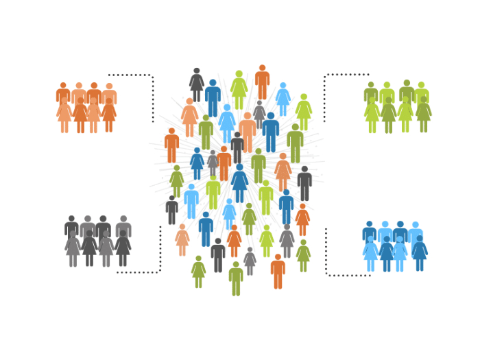
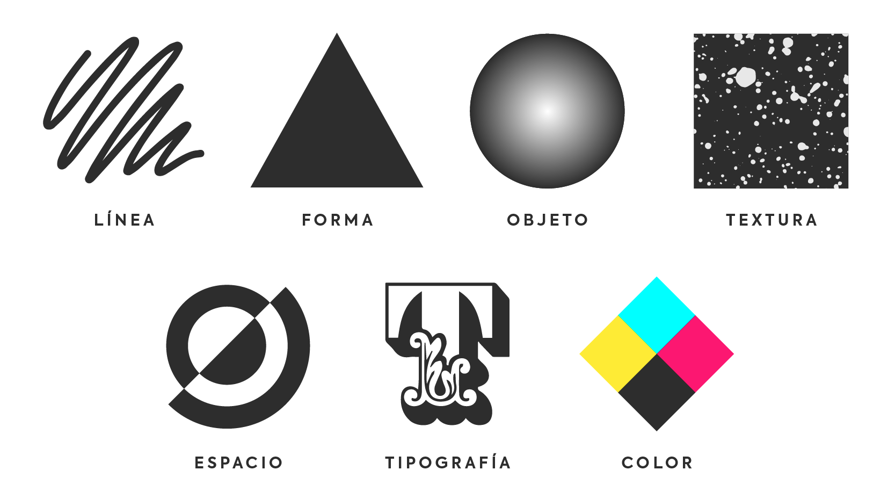

RESUMEN
Resume Page
- Público objetivo
Respecto al público al que se dirige nuestra página. En este caso nuestra página va diririga hacia aquellas personas de una edad superior sobre unos 25 años en adelante, aunque también sirve de referencia para aquellos jovenes que quieran visitar nuestros máginificos lugares gaditanos, sus cielos, sus tierras, sus casas, sus habitantes así como sus fiestas, costumbres y muchas más cosas que encontrarás en ellas.
- Tipo de web
Ante nosotros aparece una web puramente informativa. Esta web busca informar de los lugares de la provincia de Cádiz para atraer turismo hacia esta.

- Elementos de diseño
Algunos elementos de diseño tenemos ante nosotros la paleta de colores que explicaremos en otro página de la web, así también tenemos la tipografía que he elegido siendo esta lá letra por defecto sin serifa de cada navegador. Por otra parte como otro elemento de diseño tenemos los iconos.
